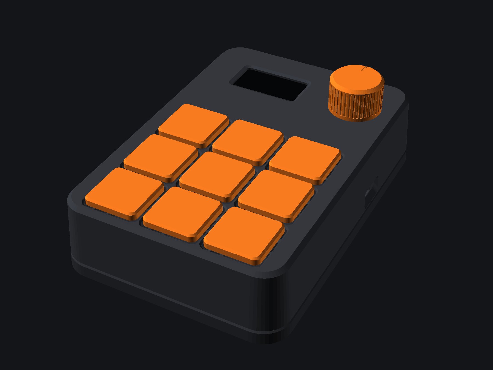
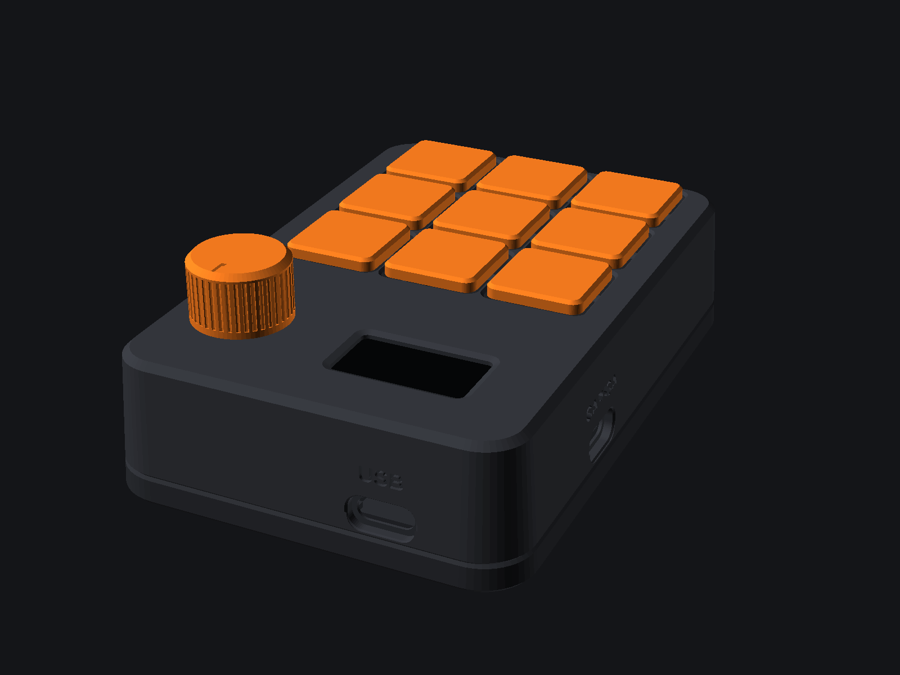
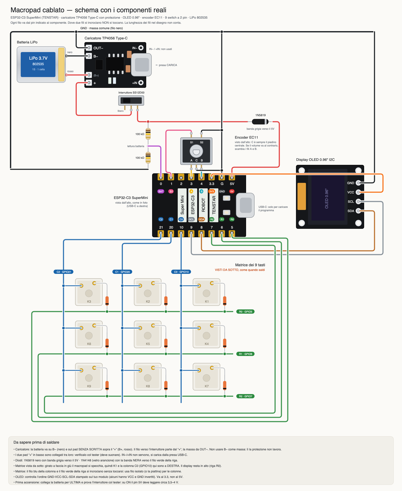
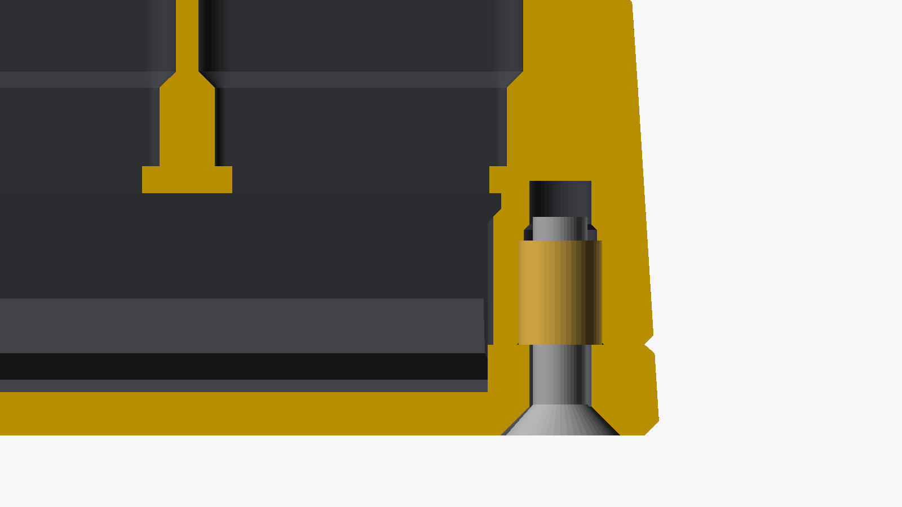

A wireless desk macropad with mechanical switches, a rotary knob and an OLED that labels every key. You hand-wire it from cheap modules, print it on any FDM printer, and flash it right from this page.
Un macropad da scrivania senza fili, con switch meccanici, una manopola e un display OLED che mostra a cosa serve ogni tasto. Si cabla a mano con moduli economici, si stampa con qualsiasi stampante FDM e si programma direttamente da questa pagina.

Pairs like any keyboard with macOS and Windows. Each key has its own combo for each system; press and hold the knob to switch Mac ↔ Windows.
Si abbina come una tastiera qualsiasi a macOS e Windows. Ogni tasto ha una combinazione per ciascun sistema; tieni premuta la manopola per passare da Mac a Windows.
The 0.96" OLED shows the page name and all nine key labels, lights up the key you press, and shows battery and connection status.
L'OLED da 0,96" mostra il nome della pagina e le etichette dei nove tasti, illumina il tasto premuto e indica batteria e collegamento.
Volume, scrolling, browser tabs, zoom: every page decides what the knob does. A short press flips to the next page.
Volume, scorrimento, schede del browser, zoom: ogni pagina decide cosa fa la manopola. Una pressione breve passa alla pagina dopo.
Off-the-shelf modules and through-hole parts, joined with thin wire. If you can solder a pin header, you can build this.
Moduli già pronti e componenti a foro passante, collegati con filo sottile. Se sai saldare un pin, sai costruirlo.
The display sleeps after a minute, the ESP32 after fifteen; a press of the knob wakes it. Charges over USB-C.
Il display si spegne dopo un minuto e l'ESP32 dopo quindici; una pressione della manopola lo risveglia. Si ricarica via USB-C.
The case closes with four M3 screws into brass heat-set inserts, so it can be opened and closed again and again.
Il guscio si chiude con quattro viti M3 in inserti in ottone, così si apre e si richiude quante volte vuoi.
These are the four default pages from the firmware. Press a key, or click the knob to move to the next page, just as on the real device.
Queste sono le quattro pagine predefinite del firmware. Premi un tasto o clicca la manopola per passare alla pagina dopo, proprio come sul macropad vero.
No toolchain, no drivers. The latest firmware is built automatically from this repository and written to the board over USB, from your browser.
Niente programmi da installare, niente driver. L'ultimo firmware viene compilato in automatico da questo repository e scritto sulla scheda via USB, dal browser.
Hold the BOOT button on the SuperMini, tap RESET, release BOOT, then click Install again. Also try another cable or USB port.
Tieni premuto il tasto BOOT sul SuperMini, premi e rilascia RESET, rilascia BOOT e clicca di nuovo Installa. Prova anche un altro cavo o un'altra porta USB.
On a first install, choose to erase the board. When updating, don’t erase: your key layout stays on the macropad.
Alla prima installazione scegli di cancellare la scheda. Per un aggiornamento non cancellare: la tua configurazione dei tasti resta sul macropad.
Install PlatformIO, then inInstalla PlatformIO, poi in firmware/: pio run -t upload
Common, inexpensive parts. Each name links to an AliExpress listing; the grey line says which variant to pick. Listings change, so check the photos before ordering.
Componenti comuni ed economici. Ogni nome porta a un'inserzione AliExpress; la riga grigia dice quale variante scegliere. Le inserzioni cambiano, quindi controlla le foto prima di ordinare.


Click to open the full-size vector diagram.Clicca per aprire lo schema vettoriale a piena risoluzione.
| FunctionFunzione | GPIO |
|---|---|
| Key rows R0 · R1 · R2Righe tasti R0 · R1 · R2 | 5 · 6 · 7 |
| Key columns C0 · C1 · C2Colonne tasti C0 · C1 · C2 | 10 · 20 · 21 |
| OLED SDA · SCL | 8 · 9 |
| Encoder A · B · pushEncoder A · B · pulsante | 3 · 4 · 1 |
| Battery sense (100k + 100k)Lettura batteria (100k + 100k) | 0 |
| OLED VCC · GNDOLED VCC · GND | 3.3 · G |
The Bambu Studio project is set up for the A1 with a 0.4 nozzle: PLA, 0.20 mm layers, 3 walls, 15% gyroid, tree supports on the top shell only. STL files work with any slicer.
Il progetto Bambu Studio è impostato per la A1 con ugello 0,4: PLA, strato 0,20 mm, 3 pareti, gyroid 15%, supporti ad albero solo sul guscio. Gli STL vanno bene con qualsiasi slicer.

Press the four M3 inserts into the shell bosses with a soldering iron at 220–230 °C until they sit flush, then close the case from below with M3 × 12 countersunk screws. Print test_insert.stl first: it has 3.8, 4.0 and 4.2 mm holes marked with 1–3 dots.
Spingi i quattro inserti M3 nelle torrette del guscio con il saldatore a 220–230 °C finché sono a filo, poi chiudi dal basso con viti M3 × 12 svasate. Stampa prima test_insert.stl: ha fori da 3,8, 4,0 e 4,2 mm segnati con 1–3 puntini.
Pick the tool that suits you: both edit the same layout, which is stored on the macropad itself.
Scegli lo strumento che preferisci: entrambi modificano la stessa configurazione, salvata sul macropad.
Runs in Chrome or Edge, nothing to install. Connect the macropad with its USB cable, edit pages, labels and the knob, record shortcuts by pressing them, then send. Bluetooth works too where the browser can see the macropad.
Funziona in Chrome o Edge, senza installare niente. Collega il macropad con il cavo USB, modifica pagine, etichette e manopola, registra le scorciatoie premendole e invia. Funziona anche via Bluetooth, dove il browser riesce a vedere il macropad.
Open the configuratorApri il configuratoreA native app over Bluetooth, no cable: edit, reorder and test pages with a live view of the device, and a virtual macropad on screen. Interface in Italian.
Un'app nativa via Bluetooth, senza cavo: modifica, riordina e prova le pagine vedendo il macropad in tempo reale, con anche un macropad virtuale sullo schermo.
Download for MacScarica per MacFirst launch: the app isn’t notarized by Apple. Open it, then go to System Settings → Privacy & Security and click Open Anyway.
Primo avvio: l'app non è autenticata da Apple. Aprila, poi vai in Impostazioni di Sistema → Privacy e sicurezza e clicca Apri comunque.
Default pages live in firmware/src/keymap.h. The firmware accepts a full layout as JSON over BLE or as text lines over USB; the protocol is documented in firmware/src/app_link.h.
Le pagine predefinite sono in firmware/src/keymap.h. Il firmware accetta la configurazione in JSON via BLE o come righe di testo via USB; il protocollo è descritto in firmware/src/app_link.h.